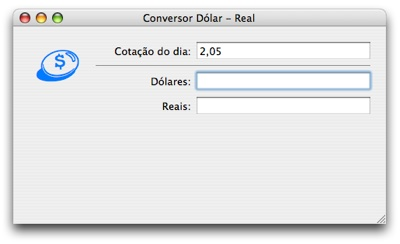

Veja o vídeo da palestra completa (34 minutos):
Vídeo original aqui
Acompanhe o tutorial em seu Mac, seguindo estas instruções:
1. Apresentação
Este tutorial é uma demonstração do PyObjC , que faz a ponte entre Python e Cocoa , a poderosa API usada pelos aplicativos do Mac OS X .
Com ele instalado, o programador usa o Xcode e o Interface Builder normalmente, codificando em Python, sem precisar saber nada de Objective-C ou AppleScript .
Os aplicativos resultantes funcionam exclusivamente no Mac, usufruindo de todas as suas tecnologias nativas.
Para saber mais:
2. Dolar - Versão com Outlets e Actions
Baixe os fontes (Zip, 60 KB)
2.1. Instale o ambiente de desenvolvimento
Instale o Xcode (leia instruções )
Instale o PyObjC À partir do Leopard, o PyObjC já faz parte do sistema.
2.2. Crie um projeto novo e salve na mesa
Abra o Xcode
New Project → Application → PyObjC Application
Project Directory: ~/Desktop/Dolar
2.3. Veja os arquivos criados
Info.plist
CFBundleShortVersionString
Copyright
setup.py
Construção do aplicativo
Não precisa mexer
Dolar .py
Arquivo principal do programa
Não precisa mexer
Dolar AppDelegate.py
Classe base para brincar (já instanciada no Interface Builder)
Coloque aqui seus métodos
MainMenu.nib
Editável no Interface Builder (chamado de IB daqui adiante)
Arquivo com as definições de posicionamentos e conexões entre elementos
2.4. Crie a interface no IB
Chame o Interface Builder Duplo clique no MainMenu.nib
Mostre o Inspetor Tools → Show Inspector
Dê um título para a janela Inspetor → Attributes → Window Title: Conversor Dólar - Real
Ligue as guias de posicionamento Layout → Guides → Enable Aqua Guidelines
Mostre as paletas Tools → Palettes → Show Palettes
Arraste os elementos para a janela
3 labels Paleta → Text → System Font Text
3 caixas de texto Paleta → Text → NSTextField
1 botão Paleta → Controls → Button
Coloque nomes nos labels e no botão Duplo clique no elemento
Cotação do dia:
Dólares:
Reais:
Converter
2.5. Crie as ligações para comunicar-se com a classe
Duplo clique na instância do AppDelegate (cubo azul)
Adicione outlets para as caixas de texto Inspetor → Attributes → Outlets → Add
Adicione um action para o botão Inspetor → Attributes → Action → Add
2.6. Conecte os elementos com as ligações
Conecte os outlets com suas respectivas caixas de texto
Ctrl-click na instância do AppDelegate (cubo azul)
Arrasta até a caixa de texto da cotação
Inspetor → Connections → Outlets → cotacao → Connect
Repita para as outras caixas de texto
Conecte o botão com sua ação
Ctrl-click no botão
Arrasta até a instância do AppDelegate
Inspetor → Connections → Target/Action → converte: → Connect
2.7. Crie o executável
Volte ao Xcode
Project → New Custom Executable...
Executable Name: Dolar (uma palavra para não complicar)
Executable Path: /usr/bin/env
Groups & Files → Executables → Seleciona teu executável
File → Get Info → Arguments → Botão [+]
Argument: Dolar .app/Contents/MacOS/Dolar
2.8. Teste o programa
Build → Build and Run
Botão não faz nada
Veja no log a mensagem sobre falha na conexão do action converte:
2.9. Arrume o erro do log
Edite o código Python Duplo clique em Dolar AppDelegate.py
Dentro da classe, crie o método converte_
def converte_(self, sender): pass
Sempre lembre-se que ":" deve virar "_" no nome do método
Teste o programa novamente
Agora sem erros no log, mas o botão continua sem ação
2.10. Descubra objetos e métodos
Coloque comandos dentro do converte_()
print self.cotacao # outlet
<NSTextField: 0x154c110>
Rode e teste o programa
Descubra os métodos do NSTextField
Chame a Ajuda para o Cocoa Help → Documentation → Search Groups → Cocoa
Faça a pesquisa pelo elemento Digite NSTextField na caixa de busca
Veja os métodos
Veja os métodos do pai NSControl (herdado)
Mude o print para mostrar o conteúdo da caixa de texto
print self.dolares.floatValue()
self: Instância da classe (Python)
dolares: Outlet de comunicação (Interface Builder)
floatValue(): Método do NSTextField (Objective-C)
Salada! :)
Rode e teste o programa
2.11. Faça o algoritmo do cálculo
dolares = self.dolares.floatValue()
cotacao = self.cotacao.floatValue()
reais = dolares * cotacao
print reais
2.12. Descubra como gravar o conteúdo do TextField
Veja Documentação novamente
Ache o setFloatValue: do NSControl
Grave o resultado do cálculo na caixa de texto dos Reais
self.reais.setFloatValue_(reais)
Lembre-se que no Python o ":" vira "_"
Rode e teste o programa
2.13. Melhorando: Use formatadores de dinheiro
Vá no IB
Arraste o formatador de dinheiro para cada caixa de texto da cotação Paleta → Text → NSNumberFormatter
Configure o formatador para nossa moeda Inspetor → Formatter → [x] Localize
Repita o procedimento para as caixas de dólares e reais
Rode e teste o programa
3. Dolar - Versão com Bindings
Baixe os fontes (Zip, 60 KB)
3.1. Crie um projeto novo para Bindings
Salve e feche projeto atual no Xcode e IB
Vá na mesa F11
Duplique o diretório do projeto Command-D
Renomeie a pasta nova para: Dolar Bindings
Entre nessa pasta e abra o arquivo Dolar .xcodeproj
Rode o programa para ter certeza que tudo continua funcionando Build → Build and Run
3.2. Limpe os Outlets e Actions
Vá no IB Duplo clique no MainMenu.nib
Apague todos os outlets Duplo clique na instância do AppDelegate (cubo azul) Inspetor → Attributes → Outlets → Remove
Apague o Action Inspetor → Attributes → Action → Remove
Apague o botão "Converter", pois não será mais usado Selecione o botão na janela e aperte Delete
3.3. Crie os Bindings no IB
Selecione a caixa de texto da cotação
Inspetor → Bindings → Value → value
Bind to: Dolar AppDelegate
Model Key Path: cotacao
[x] Continuously Update Values
Isso mandará uma ação a cada alteração no texto da caixa
E chamará automaticamente o método setCotacao_ no Python
O nome do método é sempre "set" + capitalize(Model Key Path) + "_"
Repita o procedimento para as outras caixas de texto
3.4. Crie os Bindings no Python
Vá no Xcode
Edite o Dolar AppDelegate.py
Importe o módulo "objc"
Logo após a declaração da classe DolarAppDelegate, crie três "ivar"
cotacao = objc.ivar(u"cotacao")
dolares = objc.ivar(u"dolares")
reais = objc.ivar(u"reais")
Atente aos detalhes
Lembre-se que o nome do binding vem em Unicode
Esse nome do binding é o Model Key Path que você preencheu no IB
Cada um destes bindings representa o conteúdo da caixa de texto
3.5. Crie o método para converter Dólares em Reais
Ao se digitar o valor em dólares, o valor em reais será calculado automaticamente
Para isso, crie o método que cuidará das alterações na caixa de dólares
def setDolares_(self, valor):
Lembre-se do _ no final, pois recebe argumento
Guarde o valor digitado pelo usuário na referência ao binding (ivar)
Faça as contas e guarde o resultado
self.reais = self.dolares * self.cotacao
O resultado será atualizado automaticamente
Rode e teste o programa
3.6. Crie o método para converter Reais em Dólares
Ao se digitar o valor em reais, o valor em dólares será calculado automaticamente
Similar ao passo anterior, crie o método set
def setReais_(self, valor):
Guarde o valor e faça o cálculo
self.reais = valor
self.dolares = self.reais / self.cotacao
Rode e teste o programa
Perceba que o antigo método converte_() não é mais necessário
3.7. Melhorias na interface
Visualização dos resultados
Crie outros labels usando letras grandes e coloridas para mostrar os valores em reais e dólares
Faça bindings destes textos com o conteúdo das caixas de texto, para serem atualizados automaticamente
Usabilidade
Use um binding para esconder as caixas de dólares e reais enquanto a cotação não for digitada
Inspetor → Bindings → Availability → hidden
Bind to: Dolar AppDelegate
Model Key Path: cotacao
Value Transformer: NSIsNil
Isso deixa claro para o usuário que a cotação deve ser digitada primeiro
Além de evitar a necessidade de verificações no código Python, pois a cotação sempre vai estar preenchida
Chega de "if self.cotacao:" nos setFoo_()

Baixe os fontes (Zip, 68 KB)
4. Outros Programas
4.1. Markup Babel - Interface Cocoa para programa de console
Um exemplo de como fazer um interface Cocoa para um programa Python já existente. O aplicativo txt2tags foi usado como módulo, convertendo textos automaticamente enquanto o usuário digita. Foi usada a técnica de binding no conteúdo com o método setReferencia_() agindo a cada tecla digitada.
Baixe os fontes , abra no Xcode e rode (Build and Run).
4.2. contatos.py - Programa de linha de comando com PyObjC
Um exemplo de como usar o PyObjC para programas de linha de comando. É utilizado o framework da Agenda do Mac (Address Book), acessando os dados dos contatos em tempo real e mostrando na tela.
Baixe os fontes e execute no Terminal.app: python contatos.py
4.3. AB Reports - Programa complexo
Um exemplo de como fazer um programa mais complexo, utilizando as tecnologias disponíveis no Mac OS X.
Data source (tabelas)
Ordenar os dados pela coluna FOO (ordem direta e reversa)
Trocar colunas de lugar (arrastando)
Live search
Com o uso de bindings, fazer pesquisas em tempo real, enquanto digita
Picture resize
Com o uso de sliders e bindings, fica fácil alterar o tamanho das fotos em tempo real, enquanto arrasta o botão
Performance
Mesmo lidando com muitos dados e fotos, a performance fica excelente
O PyObjC não sobrecarrega o aplicativo, é uma ponte enxuta
Programa ainda inacabado, fontes não disponíveis.